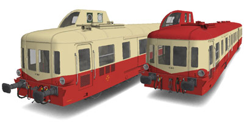
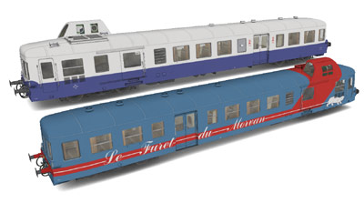
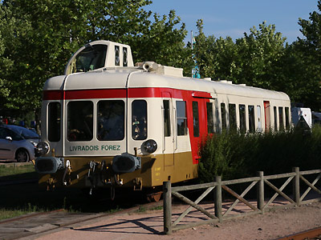
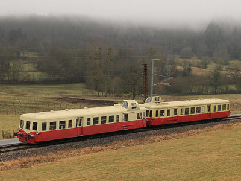
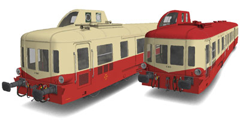
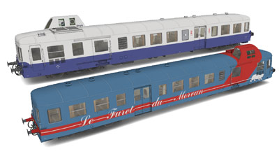

L'X 3800 version 
Vincent Lorquet a réalisé de sompteux X 3800.
 Ferrovia - 05 Juin 2012
X 3800 - U300
Les Picasso
Aisément reconnaissable par son unique loge de conduite surélevée et excentrée qui lui a valu le surnom "Picasso", l'X3800 est un autorail unifié de moyenne puissance (300ch). Produit à 251 exemplaires de 1950 à 1961.
De nombreux exemplaires ont été préservés par des associations de train touristique.
Quelques données techniques
Constructeur : Renault, De Dietrich ou ANF
Motorisation : V12 517 G ou 575 Renault, ou Saurer BZDS
Transmission : Boite de vitesse mécanique.
Puissance totale : 300, 320, 340 ou 360ch selon le moteur
Longueur : 21,85 m
Masse : 31,5t
Pour plus d'info :

L'X 3867 de l'Agrivap à Ambert (11/08/2009)

L'X 4039 et l'X 3886 de l'ABFC à Revonnas (25/02/2012)
L'X 3800 version 
Vincent Lorquet a réalisé de sompteux X 3800.
 